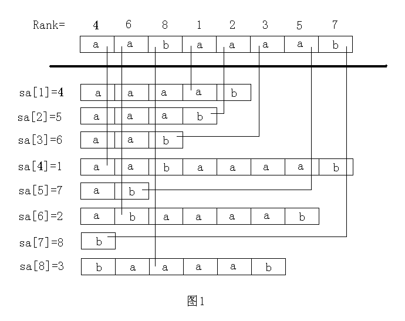
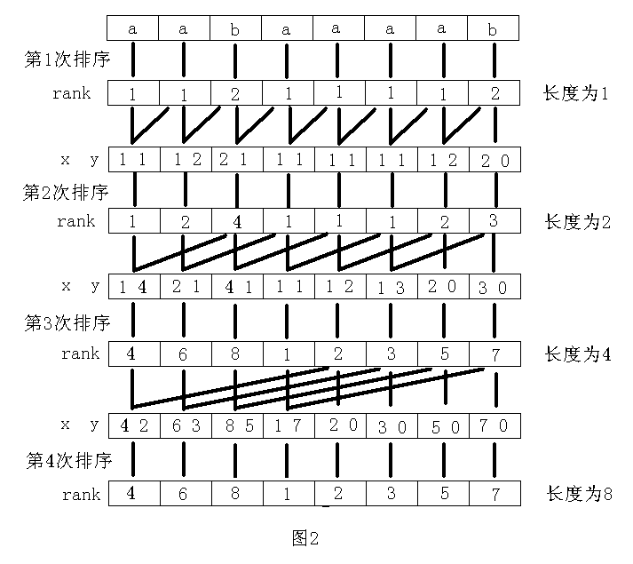
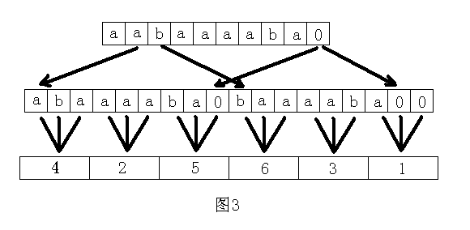
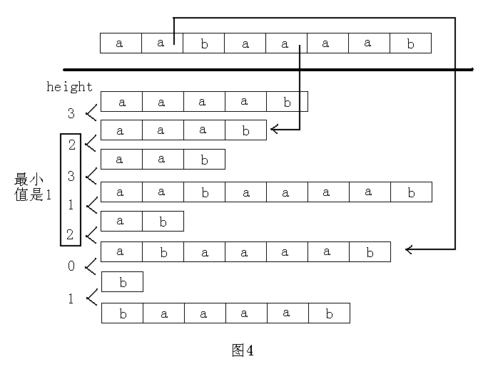

对于字符串 S S S ∣ S ∣ |S| ∣ S ∣ S S S n = ∣ S ∣ , m = ∣ T ∣ n=|S|,m=|T| n = ∣ S ∣ , m = ∣ T ∣ S i ( 1 ≤ i ≤ n ) S_i(1\le i\le n) S i ( 1 ≤ i ≤ n ) S S S i i i 1 1 1
对于字符串 S , T S,T S , T S T ST S T S S S T T T ∣ S T ∣ = ∣ S ∣ + ∣ T ∣ , ( S T ) i = S i , ( S T ) j + ∣ S ∣ = T j ( 1 ≤ i ≤ ∣ S ∣ , 1 ≤ j ≤ ∣ T ∣ ) |ST|=|S|+|T|,(ST)_i=S_i,(ST)_{j+|S|}=T_j(1\le i\le|S|,1\le j\le|T|) ∣ S T ∣ = ∣ S ∣ + ∣ T ∣ , ( S T ) i = S i , ( S T ) j + ∣ S ∣ = T j ( 1 ≤ i ≤ ∣ S ∣ , 1 ≤ j ≤ ∣ T ∣ )
字符串 S S S S l , r ( l ≤ r ) S_{l,r}(l\le r) S l , r ( l ≤ r ) ( S l S l + 1 ⋯ S r ) (S_lS_{l+1}\cdots S_r) ( S l S l + 1 ⋯ S r ) S S S l − 1 l-1 l − 1 ∣ S ∣ − r |S|-r ∣ S ∣ − r S r , l ( l < r ) S_{r,l}(l<r) S r , l ( l < r )
S S S S R S^{\mathsf{R}} S R ( S ∣ S ∣ S ∣ S ∣ − 1 ⋯ S 1 ) (S_{|S|}S_{|S|-1}\cdots S_1) ( S ∣ S ∣ S ∣ S ∣ − 1 ⋯ S 1 )
字符串 S S S T T T S = T S=T S = T ∣ S ∣ = ∣ T ∣ |S|=|T| ∣ S ∣ = ∣ T ∣ ∀ 1 ≤ i ≤ ∣ S ∣ , S i = T i \forall 1\le i\le |S|,S_i=T_i ∀ 1 ≤ i ≤ ∣ S ∣ , S i = T i
LCP ( S , T ) \operatorname{LCP}(S,T) L C P ( S , T ) S S S T T T Longest Common Prefix \text{Longest Common Prefix} Longest Common Prefix x ( x ≤ min { ∣ S ∣ , ∣ T ∣ } ) x(x\le \min\{|S|,|T|\}) x ( x ≤ min { ∣ S ∣ , ∣ T ∣ } ) S 1 , x = T 1 , x S_{1,x}=T_{1,x} S 1 , x = T 1 , x LCP ( S , T ) = S 1 , x \operatorname{LCP}(S,T)=S_{1,x} L C P ( S , T ) = S 1 , x LCP ( S , T ) \operatorname{LCP}(S,T) L C P ( S , T )
字符串 S S S T T T S < T S<T S < T x = ∣ LCP ( S , T ) ∣ x=|\operatorname{LCP}(S,T)| x = ∣ L C P ( S , T ) ∣ ( x < ∣ S ∣ ∧ x < ∣ T ∣ ∧ S x + 1 < T x + 1 ) ∨ ( x = ∣ S ∣ ∧ x < ∣ T ∣ ) (x<|S|\land x<|T|\land S_{x+1}<T_{x+1})\lor(x=|S|\land x<|T|) ( x < ∣ S ∣ ∧ x < ∣ T ∣ ∧ S x + 1 < T x + 1 ) ∨ ( x = ∣ S ∣ ∧ x < ∣ T ∣ )
用 # , @ \#,@ # , @
约定记号：O ( 预处理 ) − O ( 修改 / 查询等操作 ) \mathcal{O}({\sf 预处理})-\mathcal{O}({\sf 修改/查询等操作}) O ( 预 处 理 ) − O ( 修 改 / 查 询 等 操 作 )
思路：利用已有的回文串求解。
先把字符串 abc 变成 #a#b#c# 方便处理长度为偶数的回文串，然后设 i i i r i r_i r i q = p + r p − 1 q=p+r_p-1 q = p + r p − 1 q = max { j + r j − 1 } q=\max\{j+r_j-1\} q = max { j + r j − 1 }
分讨 i , q i,q i , q
q < i q<i q < i i i i r i = 1 r_i=1 r i = 1 q ≥ i q\ge i q ≥ i j = 2 p − i j=2p-i j = 2 p − i i i i p p p i i i j j j [ p − r p + 1 , q ] [p-r_p+1,q] [ p − r p + 1 , q ] r i = min { r j , p − i + 1 } r_i=\min\{r_j,p-i+1\} r i = min { r j , p − i + 1 }
剩下的部分就不知道了，while 一下暴力判断能否扩张即可。
时间复杂度为 O ( n ) \mathcal{O}(n) O ( n )
证明：q q q 2 n + 1 2n+1 2 n + 1 r i r_i r i while）时 r i r_i r i q q q r i r_i r i q q q i i i [ p − r p + 1 , q ] [p-r_p+1,q] [ p − r p + 1 , q ] i i i j j j O ( n ) \mathcal{O}(n) O ( n )
代码：
1 2 3 4 5 6 7 8 9 10 11 12 13 14 15 16 17 18 char s[N << 1 ], t[N];int r[N << 1 ];void solve () scanf ("%s" , t + 1 ), m = strlen (t + 1 ), n = m << 1 | 1 ; s[1 ] = '#' ; rep (i, 1 , m) s[i << 1 ] = t[i], s[i << 1 | 1 ] = '#' ; int p = 0 , q = 0 ; rep (i, 1 , n) { r[i] = (q < i ? 1 : min (q - i + 1 , r[(p << 1 ) - i])); for (int x = i - r[i], y = i + r[i]; 1 <= x && y <= n && s[x] == s[y]; x--, y++) r[i]++; if (i + r[i] - 1 > q) p = i, q = i + r[i] - 1 ; } rep (i, 1 , n) ans = max (ans, r[i] - 1 ); printf ("%d\n" , ans); }
s a , r k sa,rk s a , r k 令 T i = S i , n ( 1 ≤ i ≤ n ) T_i=S_{i,n}(1\le i\le n) T i = S i , n ( 1 ≤ i ≤ n ) S S S T i ′ ( 1 ≤ i ≤ n ) T_i^\prime(1\le i\le n) T i ′ ( 1 ≤ i ≤ n ) i i i
定义后缀数组 s a i = n − ∣ T i ′ ∣ + 1 ( 1 ≤ i ≤ n ) sa_i=n-|T_i^\prime|+1(1\le i\le n) s a i = n − ∣ T i ′ ∣ + 1 ( 1 ≤ i ≤ n ) T i ′ T_i^\prime T i ′ i i i T s a i T_{sa_i} T s a i T s a i = T i ′ T_{sa_i}=T_i^\prime T s a i = T i ′
定义排名数组 r k i ( 1 ≤ i ≤ n ) rk_i(1\le i\le n) r k i ( 1 ≤ i ≤ n ) s a r k i = r k s a i = i sa_{rk_i}=rk_{sa_i}=i s a r k i = r k s a i = i T i T_i T i r k i rk_i r k i T i = T r k i ′ T_i=T_{rk_i}^\prime T i = T r k i ′

s a , r k sa,rk s a , r k O ( n 2 log n ) \mathcal{O}(n^2\log n) O ( n 2 log n ) 快排，O ( n ) \mathcal{O}(n) O ( n )
O ( n log 2 n ) \mathcal{O}(n\log^2n) O ( n log 2 n ) 考试可以救命。
快排，比较字典序时二分 LCP \text{LCP} LCP LCP \text{LCP} LCP LCP \text{LCP} LCP
O ( n log 2 n ) \mathcal{O}(n\log^2n) O ( n log 2 n ) 倍增（Doubling Algorithm \text{Doubling Algorithm} Doubling Algorithm
首先排序所有的 S i S_i S i S A 0 , R K 0 SA_0,RK_0 S A 0 , R K 0
接下来第 k ( k ≥ 1 ) k(k\ge 1) k ( k ≥ 1 ) 2 k − 1 2^{k-1} 2 k − 1 ( R K k − 1 ) i , ( R K k − 1 ) i + 2 k − 1 (RK_{k-1})_i,(RK_{k-1})_{i+2^{k-1}} ( R K k − 1 ) i , ( R K k − 1 ) i + 2 k − 1 S A k , R K k SA_k,RK_k S A k , R K k { S i , min { i + 2 k − 1 , n } : i ∈ [ 1 , n ] ∩ Z } \{S_{i,\min\{i+2^k-1,n\}}:i\in[1,n]\cap\mathbb Z\} { S i , m i n { i + 2 k − 1 , n } : i ∈ [ 1 , n ] ∩ Z }
其中，( R K ? ) x = − 11451 4 1919810 ( x > n ) (RK_?)_x=-114514^{1919810}(x>n) ( R K ? ) x = − 1 1 4 5 1 4 1 9 1 9 8 1 0 ( x > n ) 0 0 0
找到最小的 t t t 2 t ≥ n 2^t\ge n 2 t ≥ n s a = S A t , r k = R K t sa=SA_t,rk=RK_t s a = S A t , r k = R K t
排序使用快排，时间复杂度 O ( n log 2 n ) \mathcal{O}(n\log^2n) O ( n log 2 n )

O ( n log n ) \mathcal{O}(n\log n) O ( n log n ) 发现上面倍增中排序使用快排的 O ( n log n ) \mathcal{O}(n\log n) O ( n log n ) O ( n ) \mathcal{O}(n) O ( n ) O ( log n ) \mathcal{O}(\log n) O ( log n )
1 2 3 4 5 6 7 8 9 10 11 12 13 14 15 16 17 18 19 20 21 22 23 24 25 26 27 28 29 30 31 32 #define ix(x) (isdigit(x) ? x - '0' : (x >= 'A' && x <= 'Z' ? x - 'A' + 10 : x - 'a' + 36)) #define rep(i, l, r) for (int i = (int)(l), i##End = (int)(r); i <= i##End; i = -~i) #define per(i, r, l) for (int i = (int)(r), i##End = (int)(l); i >= i##End; i = ~-i) char s[N];int buc[N], sa[N], SA[N], rk[N], RK[N];bool cmp (int a[], int x, int y, int w) return (a[x] == a[y] && a[x + w] == a[y + w]); }void suffix_array () rep (i, 1 , n) buc[ix (s[i])]++; rep (i, 0 , 61 ) buc[i] += buc[i - 1 ]; per (i, n, 1 ) sa[buc[ix (s[i])]--] = i; rep (i, 1 , n) rk[sa[i]] = rk[sa[i - 1 ]] + (s[sa[i]] != s[sa[i - 1 ]]); for (int k = 1 ; k <= n; k <<= 1 ) { rep (i, 1 , n) buc[rk[sa[i]]] = i; per (i, n, 1 ) if (sa[i] > k) SA[buc[rk[sa[i] - k]]--] = sa[i] - k; rep (i, n - k + 1 , n) SA[buc[rk[i]]--] = i; rep (i, 1 , n) RK[SA[i]] = RK[SA[i - 1 ]] + !cmp (rk, SA[i], SA[i - 1 ], k); swap (rk, RK), swap (sa, SA); if (rk[sa[n]] >= n) break ; } } void solve () scanf ("%s" , s + 1 ), n = strlen (s + 1 ); suffix_array (); rep (i, 1 , n) printf ("%d " , sa[i]); }
O ( n ) \mathcal{O}(n) O ( n )
DC3（Difference Cover modulo 3 \text{Difference Cover modulo 3} Difference Cover modulo 3
J. K a ¨ rkk a ¨ inen \text{J. Kärkkäinen} J. K a ¨ rkk a ¨ inen P. Sanders \text{P. Sanders} P. Sanders 2003 2003 2 0 0 3 原论文 2009 2009 2 0 0 9
SA-IS（Suffix Array Induced Sorting \text{Suffix Array Induced Sorting} Suffix Array Induced Sorting
中山大学农革教授组于 2009 2009 2 0 0 9 2015 2015 2 0 1 5
是目前求后缀数组最快的方法。
原论文 讲得很好的博客 与 有价值的评论
这是 DC3 的（一部分的）示意图。

h t ht h t 定义 lcp ( i , j ) = ∣ LCP ( T s a i , T s a j ) ∣ \operatorname{lcp}(i,j)=|\operatorname{LCP}(T_{sa_i},T_{sa_j})| l c p ( i , j ) = ∣ L C P ( T s a i , T s a j ) ∣ i , j i,j i , j
定义辅助数组 h t i ( 1 ≤ i ≤ n ) = lcp ( i − 1 , i ) = ∣ LCP ( T i − 1 ′ , T i ′ ) ∣ = ∣ LCP ( T s a i − 1 , T s a i ) ∣ ht_i(1\le i\le n)=\operatorname{lcp}(i-1,i)=|\operatorname{LCP}(T_{i-1}^\prime,T_i^\prime)|=|\operatorname{LCP}(T_{sa_{i-1}},T_{sa_i})| h t i ( 1 ≤ i ≤ n ) = l c p ( i − 1 , i ) = ∣ L C P ( T i − 1 ′ , T i ′ ) ∣ = ∣ L C P ( T s a i − 1 , T s a i ) ∣ h t 1 ht_1 h t 1 0 0 0

h t ht h t
引理：
h t r k i ≥ h t r k i − 1 − 1 ht_{rk_i}\ge ht_{rk_{i-1}}-1
h t r k i ≥ h t r k i − 1 − 1
证明：
h t r k i − 1 ≤ 1 ht_{rk_{i-1}}\le 1 h t r k i − 1 ≤ 1 h t r k i − 1 > 1 ht_{rk_{i-1}}>1 h t r k i − 1 > 1
由定义，∣ LCP ( T s a r k i − 1 − 1 , T s a r k i − 1 = T i − 1 ) ∣ = h t r k i − 1 > 1 |\operatorname{LCP}(T_{sa_{rk_{i-1}-1}},T_{sa_{rk_{i-1}}}=T_{i-1})|=ht_{rk_{i-1}}>1 ∣ L C P ( T s a r k i − 1 − 1 , T s a r k i − 1 = T i − 1 ) ∣ = h t r k i − 1 > 1 LCP \operatorname{LCP} L C P a A aA a A a a a A A A h t r k i − 1 − 1 ht_{rk_{i-1}}-1 h t r k i − 1 − 1
那么可以将 T i − 1 T_{i-1} T i − 1 a A D aAD a A D T s a r k i − 1 − 1 T_{sa_{rk_{i-1}-1}} T s a r k i − 1 − 1 a A B aAB a A B B < D , ∣ B ∣ ≥ 0 , ∣ D ∣ > 0 B<D,|B|\ge 0,|D|>0 B < D , ∣ B ∣ ≥ 0 , ∣ D ∣ > 0
进一步地，可以将 T i T_i T i A D AD A D T s a r k i − 1 − 1 + 1 T_{sa_{rk_{i-1}-1}+1} T s a r k i − 1 − 1 + 1 A B AB A B
因为 T s a r k i − 1 T_{sa_{rk_i-1}} T s a r k i − 1 T s a r k i = T i T_{sa_{rk_i}}=T_i T s a r k i = T i A B ≤ T s a r k i − 1 < A D AB\le T_{sa_{rk_i-1}}<AD A B ≤ T s a r k i − 1 < A D A A A T i T_i T i T s a r k i − 1 T_{sa_{rk_i-1}} T s a r k i − 1 ∣ LCP ( T s a r k i − 1 , T s a r k i = T i ) ∣ = h t r k i ≥ ∣ A ∣ = h t r k i − 1 − 1 |\operatorname{LCP}(T_{sa_{rk_i-1}},T_{sa_{rk_i}}=T_i)|=ht_{rk_i}\ge|A|=ht_{rk_{i-1}}-1 ∣ L C P ( T s a r k i − 1 , T s a r k i = T i ) ∣ = h t r k i ≥ ∣ A ∣ = h t r k i − 1 − 1
于是可以直接根据引理暴力求解。不超过 n n n O ( n ) \mathcal{O}(n) O ( n )
1 2 3 4 5 6 7 for (int i = 1 , k = 0 ; i <= n; i++){ if (rk[i] == 0 ) continue ; if (k > 0 ) k--; while (s[i + k] == s[sa[rk[i] - 1 ] + k]) k++; ht[rk[i]] = k; }
O ( n ) \mathcal{O}(n) O ( n ) 循环表示：字符串 S S S S , ( S 2 , n S 1 ) , ( S 3 , n S 1 , 2 ) , ⋯ , ( S n S 1 , n − 1 ) S,(S_{2,n}S_1),(S_{3,n}S_{1,2}),\cdots,(S_nS_{1,n-1}) S , ( S 2 , n S 1 ) , ( S 3 , n S 1 , 2 ) , ⋯ , ( S n S 1 , n − 1 )
将字符串 S S S ( S S ) (SS) ( S S ) ( S i , n S 1 , i − 1 ) , ( S j , n S 1 , j − 1 ) ( 1 ≤ i , j ≤ ∣ S ∣ , i ≠ j ) (S_{i,n}S_{1,i-1}),(S_{j,n}S_{1,j-1})(1\le i,j\le|S|,i\not=j) ( S i , n S 1 , i − 1 ) , ( S j , n S 1 , j − 1 ) ( 1 ≤ i , j ≤ ∣ S ∣ , i = j ) ∣ S ∣ |S| ∣ S ∣
例题：Luogu P4051 [JSOI2007] 字符加密
题意简述：将字符串 S S S S i ′ ( 1 ≤ i ≤ ∣ S ∣ ) S_i^\prime(1\le i\le|S|) S i ′ ( 1 ≤ i ≤ ∣ S ∣ ) ( S i ′ ) ∣ S ∣ (S_i^\prime)_{|S|} ( S i ′ ) ∣ S ∣
解法：直接根据上面做就行。
1 2 3 4 5 6 scanf ("%s" , s + 1 ), n = strlen (s + 1 );rep (i, 1 , n) s[i + n] = s[i];n <<= 1 ; suffix_array ();rep (i, 1 , n) if (sa[i] <= (n >> 1 )) putchar (s[sa[i] + (n >> 1 ) - 1 ]);puts ("" );
问题：预先给定字符串 S S S q q q T T T S S S T T T S S S T T T S S S T T T O ( ∣ S ∣ q ) \mathcal{O}(|S|q) O ( ∣ S ∣ q )
解法：
KMP \text{KMP} KMP ACAM \text{ACAM} ACAM 于是考虑在主串 S S S
因为每一个子串都是某一个后缀的前缀，故可以考虑具有字典序单调性的后缀数组。
求出 s a sa s a T T T O ( ∣ T ∣ ) \mathcal{O}(|T|) O ( ∣ T ∣ ) O ( ∣ T ∣ log ∣ S ∣ ) \mathcal{O}(|T|\log|S|) O ( ∣ T ∣ log ∣ S ∣ )
显然可以轻松求得所有 T T T S S S
通过二分 LCP \text{LCP} LCP O ( log ∣ T ∣ log ∣ S ∣ ) \mathcal{O}(\log|T|\log|S|) O ( log ∣ T ∣ log ∣ S ∣ )
题意：每次从字符串 S S S T T T S S S T T T
解法：
每次判断当前应该取首还是尾（比较 S S S S R S^{\mathsf{R}} S R
暴力判断每次最坏 O ( n ) \mathcal{O}(n) O ( n ) 2 ∣ S ∣ + 1 2|S|+1 2 ∣ S ∣ + 1 ( S # S R ) (S\#S^{\mathsf{R}}) ( S # S R ) s a sa s a O ( n log n ) − O ( 1 ) \mathcal{O}(n\log n)-\mathcal{O}(1) O ( n log n ) − O ( 1 )
LCP \text{LCP} LCP 关于 lcp ( i , j ) \operatorname{lcp}(i,j) l c p ( i , j ) h t ht h t
∀ 1 ≤ i , j ≤ n , lcp ( i , j ) = lcp ( j , i ) \forall 1\le i,j\le n,\operatorname{lcp}(i,j)=\operatorname{lcp}(j,i) ∀ 1 ≤ i , j ≤ n , l c p ( i , j ) = l c p ( j , i ) ∀ 1 ≤ i ≤ n , lcp ( i , i ) = ∣ T s a i ∣ = n − s a i + 1 \forall 1\le i\le n,\operatorname{lcp}(i,i)=|T_{sa_i}|=n-sa_i+1 ∀ 1 ≤ i ≤ n , l c p ( i , i ) = ∣ T s a i ∣ = n − s a i + 1
证明略。于是只需要考虑所有 1 ≤ i < j ≤ n 1\le i<j\le n 1 ≤ i < j ≤ n lcp ( i , j ) \operatorname{lcp}(i,j) l c p ( i , j )
LCP Theorem \textbf{LCP Theorem} LCP Theorem ∀ 1 ≤ i < j ≤ n , lcp ( i , j ) = min k = i + 1 j { h t k } \forall 1\le i<j\le n,\operatorname{lcp}(i,j)=\min\limits_{k=i+1}^j\{ht_k\} ∀ 1 ≤ i < j ≤ n , l c p ( i , j ) = k = i + 1 min j { h t k }
很好理解。具体证明可以看 2004 2004 2 0 0 4
于是两子串的 LCP \text{LCP} LCP LCP \text{LCP} LCP RMQ \text{RMQ} RMQ
根据字典序的定义，用 LCP \text{LCP} LCP
因为子串是后缀的前缀，于是不同的子串个数就是所有子串减去后缀之间的公共前缀。
把所有后缀排好序，从后缀 i − 1 i-1 i − 1 i i i i i i h t i ht_i h t i
所以这个个数就是 n ( n + 1 ) 2 − ∑ i = 2 n h t i \dfrac{n(n+1)}{2}-\sum\limits_{i=2}^nht_i 2 n ( n + 1 ) − i = 2 ∑ n h t i
题意：求出现至少 k k k
解法：出现至少 k k k k k k max i = k n ( min j = i − k + 2 i h t j ) \max\limits_{i=k}^n\left(\min\limits_{j=i-k+2}^iht_j\right) i = k max n ( j = i − k + 2 min i h t j )
可以用单调队列做到 O ( n ) \mathcal{O}(n) O ( n ) O ( n log n ) \mathcal{O}(n\log n) O ( n log n )
…
OI-Wiki SAM 的状态数最多是 2 n − 1 2n-1 2 n − 1
1 2 3 4 5 6 7 8 9 10 11 12 13 14 15 16 17 18 19 20 21 22 23 24 25 26 27 28 29 30 31 32 33 34 35 36 37 38 39 40 41 42 43 44 45 int n;char s[N];int hd[N << 1 ], ed[N << 1 ], nt[N << 1 ], cnt;struct SAM { int tot, p; struct node { int ln, lk, ch[31 ]; void copy (node a) memcpy (ch, a.ch, sizeof (ch)); } } a[N << 1 ]; SAM () { tot = p = 0 , a[0 ].ln = 0 , a[0 ].lk = -1 ; } void extend (char c) { int q = ++tot; f[q] = 1 , a[q].ln = a[p].ln + 1 ; int u = p; for (; u != -1 && !a[u].ch[c - 'a' ]; u = a[u].lk) a[u].ch[c - 'a' ] = q; if (u == -1 ) a[q].lk = 0 ; else { int v = a[u].ch[c - 'a' ]; if (a[u].ln + 1 == a[v].ln) a[q].lk = v; else { int r = ++tot; a[r].ln = a[u].ln + 1 , a[r].lk = a[v].lk, a[r].copy (a[v]); for (; u != -1 && a[u].ch[c - 'a' ] == v; u = a[u].lk) a[u].ch[c - 'a' ] = r; a[v].lk = a[q].lk = r; } } p = q; } } S; void solve () scanf ("%s" , s + 1 ); n = strlen (s + 1 ); for (int i = 1 ; i <= n; i++) S.extend (s[i]); for (int i = 1 ; i <= S.tot; i++) add_edge (S.a[i].lk, i); }

 微信
微信